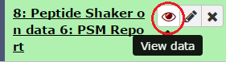
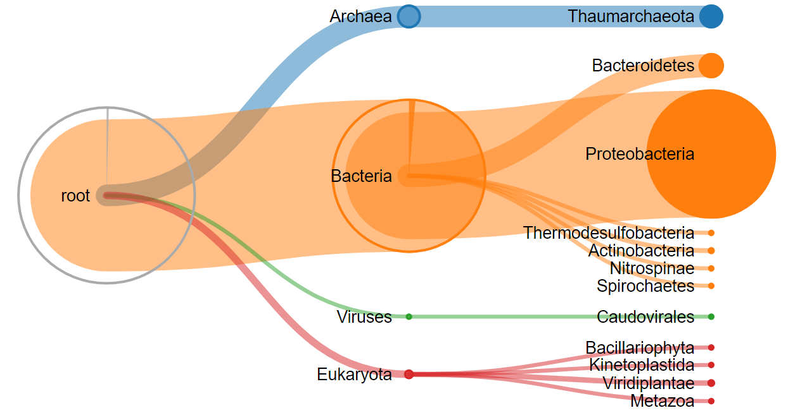

In this metaproteomics tutorial we will identify expressed proteins from a complex bacterial community sample.
For this MS/MS data will be matched to peptide sequences provided through a FASTA file.
Metaproteomics is the large-scale characterization of the entire protein complement of environmental microbiota
at a given point in time. It has the potential to unravel the mechanistic details of microbial interactions with
the host / environment by analyzing the functional dynamics of the microbiome.
In this tutorial, we will analyze a sample of sea water that was collected in August of 2013 from the Bering
Strait chlorophyll maximum layer (7m depth, 65° 43.44″ N, 168° 57.42″ W). The data were originally published in May et al., 2016.
There are a many ways how you can upload your data. Three among these are:
Upload the files from your computer
Using a direct link
Import from the data library if your instance provides the files
In this tutorial, we will get the data from Zenodo: .
Hands-on: Data upload and organization
Create a new history and name it something meaningful (e.g. Metaproteomics tutorial)
Import the three MGF MS/MS files and the FASTA sequence file from Zenodo.
Tip: Importing data via links
Copy the link location
Open the Galaxy Upload Manager
Select Paste/Fetch Data
Paste the link into the text field. You can add multiple links, each on a separate line.
Press Start
As default, Galaxy takes the link as name.
Comments
Rename the datasets to a more descriptive name
Build a Dataset list for the three MGF files
Click the Operations on multiple datasets check box at the top of the history panel
Check the three boxes next to the MGF files
Click For all selected… and choose Build dataset list
Ensure the three control samples are the only ones selected, and enter a name for the new collection (e.g. MGF files)
Click Create list and exit by clicking again the dataset operations icon
Analysis
Match peptide sequences
The search database labelled FASTA_Bering_Strait_Trimmed_metapeptides_cRAP.FASTA is the input database that
will be used to match MS/MS to peptide sequences via a sequence database search. It is a small excerpt of the original database, which was constructed based on a metagenomic screening of the sea water samples (see May et al. (2016)). The full original database can be accessed from here. A contaminant database was added.
For this, the sequence database-searching program called SearchGUI will be used.
The created dataset collection of the three MGF files in the history is used as the MS/MS input.
SearchGUI
Hands-on: SearchGUI
SearchGUI : Run SearchGUI with:
Protein Database: FASTA_Bering_Strait_Trimmed_metapeptides_cRAP.FASTA(or however you named the FASTA file)
Click the Dataset collection icon on the left of the input field:
Select the appropriate dataset collection from the list
Section Search Engine Options:
B-Search Engines: X!Tandem
Comment
The section Search Engine Options contains a selection of sequence database searching
programs that are available in SearchGUI. Any combination of these programs can be used for
generating PSMs from MS/MS data. For the purpose of this tutorial, X!Tandem we will be used.
Section Precursor Options:
Fragment Tolerance Units: Daltons
Fragment Tolerance: 0.02- this is high resolution MS/MS data
Maximum Charge: 6
Section Protein Modification Options:
Fixed Modifications: Carbamidomethylation of C
Variable modifications: Oxidation of M
Tip: Search for options
For selection lists, typing the first few letters in the window will filter the available options.
Section Advanced Options:
X!Tandem Options: Advanced
X!Tandem: Quick Acetyl: No
X!Tandem: Quick Pyrolidone: No
X!Tandem: Protein stP Bias: No
X!Tandem: Maximum Valid Expectation Value: 100
leave everything else as default
Click Execute.
Once the database search is completed, the SearchGUI tool will output a file (called a
SearchGUI archive file) that will serve as an input for the next section, PeptideShaker.
Comment
Note that sequence databases used for metaproteomics are usually much larger than the excerpt used in this tutorial. When using large databases, the peptide identification step can take much more time for computation. In metaproteomics, choosing the optimal database is a crucial step of your workflow, for further reading see Timmins-Schiffman et al (2017).
To learn more about database construction in general, like integrating contaminant databases or using a decoy strategy for FDR searching, please consult our tutorial on Database Handling.
PeptideShaker
PeptideShaker is a post-processing software tool that
processes data from the SearchGUI software tool. It serves to organize the Peptide-Spectral
Matches (PSMs) generated from SearchGUI processing and is contained in the SearchGUI archive.
It provides an assessment of confidence of the data, inferring proteins identified from the
matched peptide sequences and generates outputs that can be visualized by users to interpret
results. PeptideShaker has been wrapped in Galaxy to work in combination with SearchGUI
outputs.
Comment
There are a number of choices for different data files that can be generated using
PeptideShaker. A compressed file can be made containing all information needed to view the
results in the standalone PeptideShaker viewer. A mzidentML file can be created that contains
all peptide sequence matching information and can be utilized by compatible downstream
software. Other outputs are focused on the inferred proteins identified from the PSMs, as well
as phosphorylation reports, relevant if a phosphoproteomics experiment has been undertaken.
More detailed information on peptide inference using SearchGUI and PeptideShaker can be found in our tutorial on Peptide and Protein ID.
Hands-on: PeptideShaker
PeptideShaker : Run PeptideShaker with:
Compressed SearchGUI results: The SearchGUI archive file
Specify Contact Information for mzIdendML: You can leave the default dummy options for now, but feel free to enter custom contact information.
Include the protein sequences in mzIdentML: No
Output options: Select the PSM Report (Peptide-Spectral Match) and the Certificate of Analysis
Comment
The Certificate of Analysis provides details on all the parameters
used by both SearchGUI and PeptideShaker in the analysis. This can be downloaded from the
Galaxy instance to your local computer in a text file if desired.
Click Execute and inspect the resulting files after they turned green with the View data icon:

A number of new items will appear in your history, each corresponding to the outputs selected
in the PeptideShaker parameters. Most relevant for this tutorial is the PSM report:
Figure 1: The PSM report
Scrolling at the bottom to the left will show the sequence for the PSM that matched to these
metapeptide entries. Column 3 is the sequence matched for each PSM entry. Every PSM is a
new row in the tabular output.
In the following steps of this tutorial, selected portions of this output will be extracted and used for
analysis of the taxonomic make-up of the sample as well as the biochemical functions
represented by the proteins identified.
Taxonomy analysis
In the previous section, the genome sequencing and mass spectrometry data from
processing of biological samples was used to identify peptides present in those samples.
Now those peptides are used as evidence to infer which organisms are represented in the sample,
and what biological functions those peptides and associated proteins suggest are occurring.
The UniProt organization collects and annotates all known proteins for organisms. A UniProt
entry includes the protein amino acid sequence, the NCBI taxonomy, and any annotations
about structure and function of the protein. The UniPept web resource developed
by Ghent University will be used to match the sample peptides to proteins. UniPept indexes all Uniprot
proteins and provides a fast matching algorithm for peptides.
Tip: Unipept
Users can access UniPept via a web page and paste peptide
sequences into the search form to retrieve protein information. But we`ll use a Galaxy
Unipept tool to automate the process. The Unipept tool sends the peptide list to the
UniPept REST API service, then transforms the results into datasets that can be further analyzed
or operated on within Galaxy.
Recieving the list of peptides: Query Tabular
In order to use Unipept, a list containing the peptide sequences has to be generated.
The tool Query Tabular can load tabular data (the PSM report in this case) into a SQLite data base.
As a tabular file is being read, line filters may be applied and an SQL query can be performed.
By default, table columns will be named: c1,c2,c3,…,cn (column names for a table must be unique).
You can override the default names by entering a comma separated list of names, e.g. ,name1,,,name2
would rename the second and fifth columns.
Check your input file to find the settings which best fits your needs.
Only load the columns you have named into database: Yes
Save the sqlite database in your history: Yes
Tip
Query Tabular can also use an existing SQLite database. Activating Save the sqlite database in your history
will store the created database in the history, allowing to reuse it directly.
SQL Query to generate tabular output:
SELECT distinct sequence
FROM psm
WHERE confidence >= 95
ORDER BY sequence
Questions
The SQL query might look confusing at first, but having a closer look should clarify a lot.
What does FROM psm mean?
What need to be changed if we only want peptides with a confidence higher then 98%?
Solution
We want to read from table “psm”. We defined the name before in the “Specify Name for Table” option.
We need to change the value in line 3: “WHERE validation IS NOT ‘Confident’ AND confidence >= 98”
include query result column headers: No
Click Execute and inspect the query results file after it turned green. If everything went well, it should look similiar:
Figure 2: Query Tabular output
While we can proceed with this list of peptides, let’s practice using the created SQLite database for further queries.
We might not only be interested in all the distinct peptides, but also on how many PSMs a single peptide had.
Therefore we can search the database for the peptides and count the occurrence without configuring the tables and columns again:
Hands-on: SQLite to tabular
SQLite to tabular : Run SQLite to tabular with:
SQL Query:
SELECT sequence as "peptide", count(id) as "PSMs"
FROM psm
WHERE confidence >= 95
GROUP BY sequence
ORDER BY sequence
Click Execute. The resulting file should have two columns, one with the distinct peptides, the other with the count number of PSMs.
Retrieve taxonomy for peptides: Unipept
The generated list of peptides can now be used to search via Unipept.
We do a taxonomy analysis using the UniPept pept2lca function to return the taxonomic lowest common ancestor for each peptide:
Hands-on: Unipept
Unipept : Run Unipept with:
Unipept application: pept2lca: lowest common ancestor
Peptides input format: tabular
Tabular Input Containing Peptide column: The query results file.
Select column with peptides: Column 1
Choose outputs: Select tabular and JSON taxonomy tree
Click Execute. The history should grow by two files. View each to see the difference.
Comment
The JSON (JavaScript Object Notation) file contains the same information as the tabular file but is not comfortably human readable.
Instead, we can use it to use JavaScript libraries to visualize this data.
Visualize the data:
Click on the JSON output file from the Unipept tool to expand it. Click on the Visualize button and select Unipept Tree viewer:
A new window should appear with a visualization of the taxonomy tree of your data. Use the mouse wheel to scroll in and out and click on nodes to expand or collapse them:
Figure 3: Interactive visualization from the Unipept Tree viever plugin
Genus taxonomy level summary
The tabular Unipept output lists the taxonomy assignments for each peptide. To create a meaningful summary, the Query Tabular tool is
once again used, aggregating the number of peptides and PSMs for each genus level taxonomy assignment:
Only load the columns you have named into database: Yes
Save the sqlite database in your history: Yes
SQL Query to generate tabular output:
SELECT lca.genus,count(psm.sequence) as "PSMs",count(distinct psm.sequence) as "DISTINCT PEPTIDES"
FROM psm LEFT JOIN lca ON psm.sequence = lca.peptide
WHERE confidence >= 95
GROUP BY lca.genus
ORDER BY PSMs desc, 'DISTINCT PEPTIDES' desc
Click Execute and inspect the query results file after it turned green:
Figure 4: Query Tabular output
Functional Analysis
Recent advances in microbiome research indicate that functional characterization via metaproteomics analysis has the potential to accurately
measure the microbial response to perturbations. In particular, metaproteomics enables the estimation of the function of the microbial
community based on expressed microbial proteome.
In the following chapter, a functional analysis will be performed using the UniPept application pept2prot in order to match the list of peptides with the correlated Gene Ontology terms.
This allows to get an insight of the biological process, the molecular function and the cellular component related to the sample data.
Gene Ontology Consortium
The Gene Ontology Consortium provides with its Ontology a framework for the model of biology.
The GO defines concepts/classes used to describe gene function, and relationships between these concepts. It classifies functions along three aspects:
molecular function
molecular activities of gene products
cellular component
where gene products are active
biological process
pathways and larger processes made up of the activities of multiple gene products.
For this tutorial, a tabular file containing the relevant GO terms has been created. It contains the GO aspect, the ID and the name.
It is available at Zenodo: .
Hands-on: Data upload
Import the file Gene_Ontology_Terms.tabular from Zenodo.
Tip: Setting file metadata on upload
In the upload window of Galaxy you can set the filetype and related genome of the file you’re uploading in the corresponding columns beforehand.
This might be handy if the automatic detection of the filetype didn’t work out perfectly or if you want to avoid setting the genome later on, especially for multiple files.
As default, Galaxy takes the link as name.
Comments
Rename the datasets to a more descriptive name, e.g. Gene Ontology Terms
Tip: Creating your own Gene Ontology list
The latest Gene Ontology can be downloaded here as a text file in the OBO format.
OBO files are human-readable (in addition to machine-readable) and can be opened in any text editor. They contain more information than just the name and aspect.
In order to receive a file like we use in the tutorial for your own analysis, different tools are available to extract information from OBO files,
one of them being ONTO-PERL.
An example file with all GO terms from 08.07.2017 named Gene_Ontology_Terms_full_07.08.2017.tabular can be found on the Zenodo repository of this tutorial as well.
Retrieve GO IDs for peptides: Unipept
The UniPept application pept2prot can be used to return the list of proteins containing each peptide.
The option retrieve extra information option is set to yes so that we retrieve Gene Ontology assignments (go_references)
for each protein.
Hands-on: Unipept
Unipept : Run Unipept with:
Unipept application: pept2prot: UniProt entries containing a given tryptic peptide
retrieve extra information: Yes
Peptides input format: tabular
Tabular Input Containing Peptide column: The first query results file.
Select column with peptides: Column 1
Choose outputs: Select tabular
Click Execute.
inspect the result:
The output should be a tabular file containing a column labeled go_references. This is what we’re looking for.
Combine all information to quantify the GO results
As a final step we will use Query Tabular in a more sophisticated way to combine all information to quantify the GO analysis. The three used file and the extracted information are:
Gene Ontology Terms:
go_id to match with Normalized UniPept output
The GO aspect to group the results in three separate files
The GO description to annotate the results
Normalized UniPept output:
peptide to match with PSM Report and to count distinct peptides per GO term
go_reference to match with Gene Ontology Terms
PSM Report:
sequence to match with Normalized UniPept output
id to count distinct PSM’s per GO term
Hands-on: Query Tabular
Query Tabular : Run Query Tabular with:
Database Table: Click on + Insert Database Table
Tabular Dataset for Table: The Gene Ontology Terms file
Add another Filter: Click on + Insert Filter Tabular Input Lines:
Filter By: Select prepend a line number column
Add another Filter: Click on + Insert Filter Tabular Input Lines:
Filter By: Select select columns
enter column numbers to keep: 1,7
Add another Filter: Click on + Insert Filter Tabular Input Lines:
Filter By: Select normalize list columns, replicates row for each item in list
enter column numbers to normalize: 2
List item delimiter in column: ` ` (a single blank character)
Comments
The UniPept result file can contain multiple GO IDs in a single row. In order to create a normalized table of this data, these rows will be split so each record contains only one GO ID.
Only load the columns you have named into database: Yes
Table Index: Click on + Insert Table Index:
This is a unique index: No
Index on Columns: sequence,id
Save the sqlite database in your history: Yes
SQL Query to generate tabular output:
SELECT sequence as "peptide", count(id) as "PSMs"
FROM bering_psms
WHERE confidence >= 95
GROUP BY sequence
ORDER BY sequence
Click Execute.
With this we have combined all the data into a single database which we can now query to extract the desired information with SQLite to tabular:
Hands-on: SQLite to tabular
SQLite to tabular : Run SQLite to tabular with:
SQLite Database: The created SQLite database from the former step
SQL Query:
SELECT go.description,
count(distinct bering_psms.sequence) as "bering_peptides", count(distinct bering_psms.id) as "bering_psms"
FROM go JOIN bering_prot_go ON go.go_id = bering_prot_go.go_reference JOIN bering_prot on bering_prot_go.id = bering_prot.id JOIN
bering_psms ON bering_prot.peptide = bering_psms.sequence
WHERE go.aspect = 'molecular_function'
GROUP BY go.description
ORDER BY bering_peptides desc,bering_psms desc
Click Execute.
Repeat these steps two times by replacing molecular_function in the fifth row of the SQL query by biological_process and cellular_component.
With these three resulting files the functional analysis of this tutorial is finished. Each record contains the name of a GO term, the amount of peptides related to it and the amount of PSMs for these peptides.
With SearchGUI and PeptideShaker you can gain access to multiple search engines
Learning the basics of SQL queries can pay off
Useful literature
Further information, including links to documentation and original publications, regarding the tools, analysis techniques and the interpretation of results described in this tutorial can be found here.
Congratulations on successfully completing this tutorial!
Help us improve this content!
Please take a moment to fill in the Galaxy Training Network
Feedback Form.
Your feedback helps us improve this tutorial and will be considered
in future revisions.